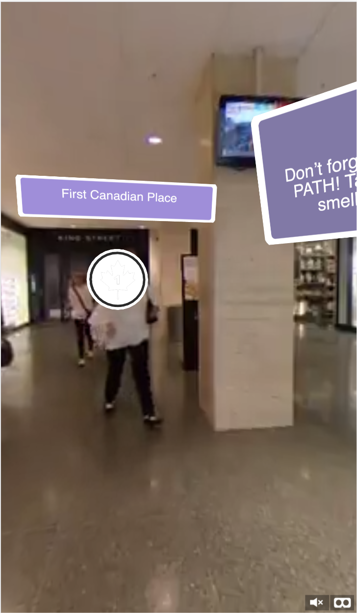
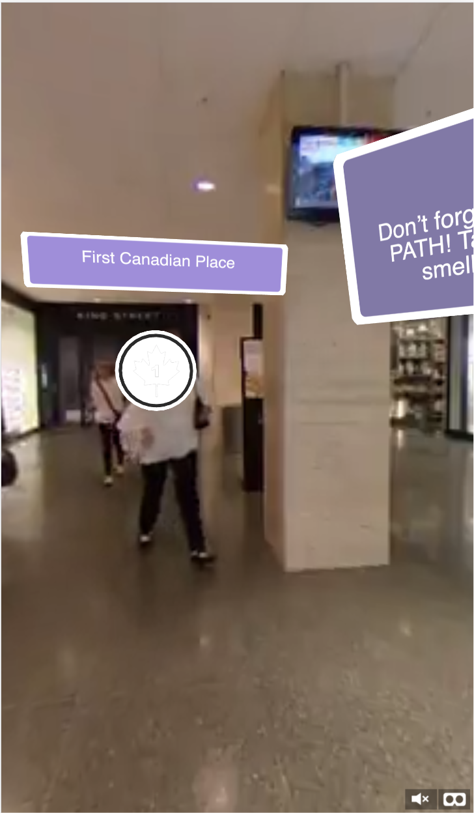

Lost in the PATH
Lost in the PATH is a VR Experience done through a Web VR App called Fader. This was for
one assignment during my study abroad trip in Toronto, Canada.
Under the downtown part of Toronto, there are tunnels that lead to many locations named
the PATH.
One huge problem they've had is the lack of signage.
Not every intersection has a map or directions telling you which place is which.
So as our VR experience, we decided to play around with the idea of using the PATH as
some sort of maze puzzle.
Throughout the experience you'll be prompted with a trivia question. Most of these questions are based off of puns and require you to know a very general knowledge of what the PATH connects. Each answer is linked with what the location is generally about.
Throughout the experience you'll be prompted with a trivia question. Most of these questions are based off of puns and require you to know a very general knowledge of what the PATH connects. Each answer is linked with what the location is generally about.
 
